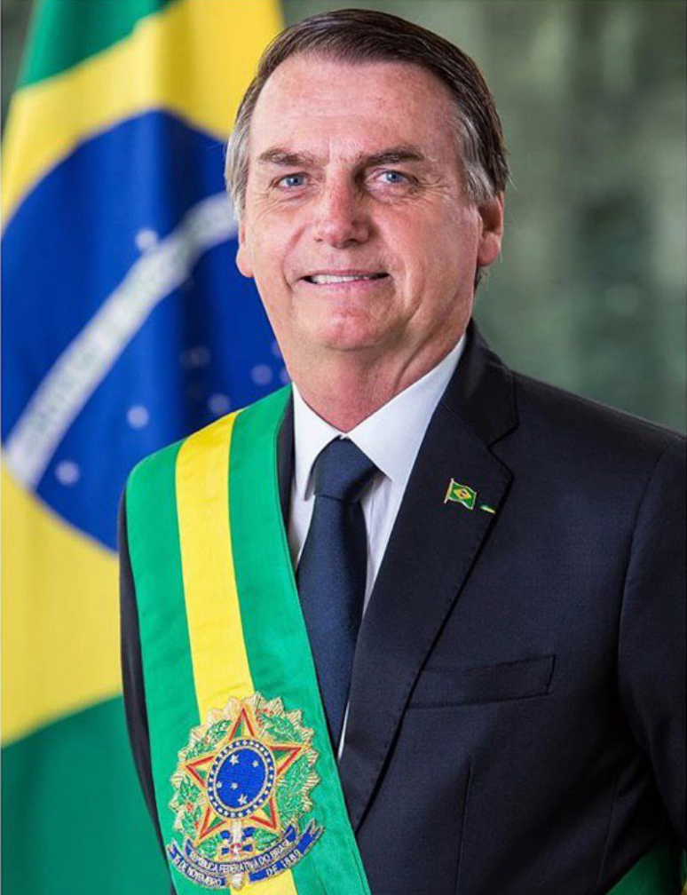
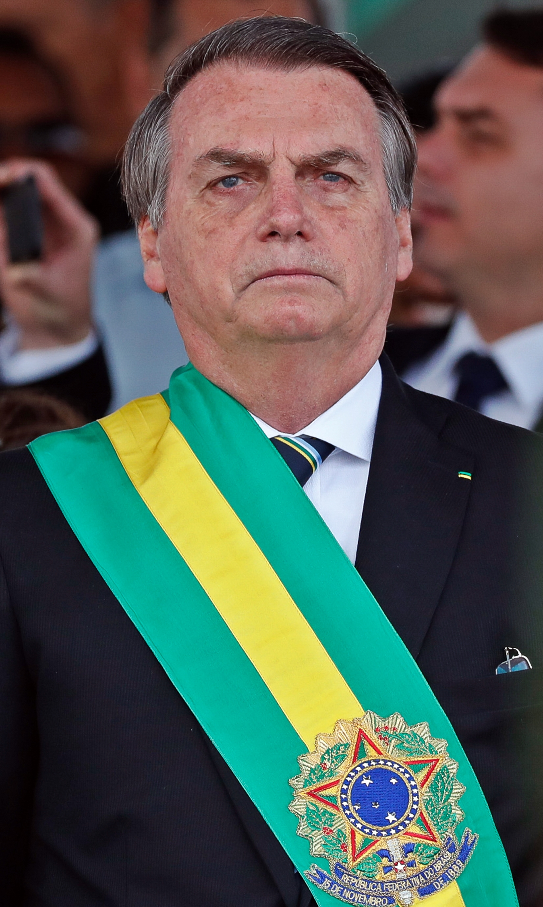

|

|
Jair Messias Bolsonaro é um militar reformado e político brasileiro, atualmente filiado ao Partido Liberal. Foi o 38.º presidente do Brasil, de 1.º de janeiro de 2019 a 31 de dezembro de 2022, tendo sido eleito pelo Partido Social Liberal. Foi deputado federal pelo Rio de Janeiro entre 1991 e 2018.
38.º Presidente do Brasil no
período de 1.º de janeiro de 2019
a 31 de dezembro de 2022.
Vice-presidente Hamilton Mourão.
Antecessor(a) Michel Temer.
Deputado federal pelo Rio de Janeiro no
período 1.º de fevereiro de 1991
a 1.º de janeiro de 2019.
Nascimento: 21 de março de 1955 (68 anos) Glicério, São Paulo.
Alma mater: Academia Militar das Agulhas Negras.
Prêmio(s): Ordem do Mérito Militar.
Cônjuge: Rogéria Nantes (c. 1978; div. 1997)
Ana Cristina Valle (c. 1997; div. 2007)
Michelle Bolsonaro (c. 2007).
Filhos: Flávio · Carlos · Eduardo · Renan · Laura.
Partido PL (2021-presente).
Religião: católico.
Profissão: militar e político.
Serviço/ramo: Exército Brasileiro.
Anos de serviço: 1973–1988.
Graduação: Capitão.
Unidade: 21º Grupo de Artilharia de Campanha 9.º Grupo de Artilharia de Campanha 8º Grupo de Artilharia de Campanha Paraquedista.
Condecorações: Medalha do Pacificador com Palma (por "Ato de Bravura" em 1978).
ler mais...
|

|